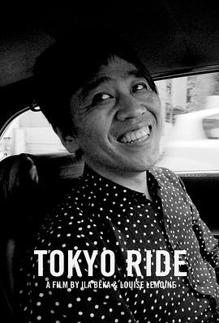

东京漫游 / Tokyo Ride
虽然看的过程中知道是SANAA的创始人大佬，但是我还是睡着了。不能理解建筑业怎么这么喜欢用黑白，我觉得画面很缺乏生动啊。片子里还有妹岛和世和moriyama san，感觉和之前看的都是一个系列的。
作品信息
| 导演 | 伊拉·贝卡 / 路易斯·雷蒙内 |
| 主演 | Ryue Nishizawa / Kazuyo Sejima / Yasuo Moriyama / Giulia / 伊拉·贝卡 / 路易斯·雷蒙内 |
| 类型 | 纪录片 |
| 制片国家/地区 | 法国 |
| 语言 | 英语 |
| 上映日期 | 2020-09-03(特拉维夫国际纪录片电影节) |
| 片长 | 90分钟 |
| IMDb | tt13066868 |
说过什么
2024-05-02 01:17:11
广播 · 看过 · ★★★☆☆
虽然看的过程中知道是SANAA的创始人大佬，但是我还是睡着了。不能理解建筑业怎么这么喜欢用黑白，我觉得画面很缺乏生动啊。片子里还有妹岛和世和moriyama san，感觉和之前看的都是一个系列的。
最后一次看到是 2026-08-01T11:04:24+10:00 · 豆瓣原页